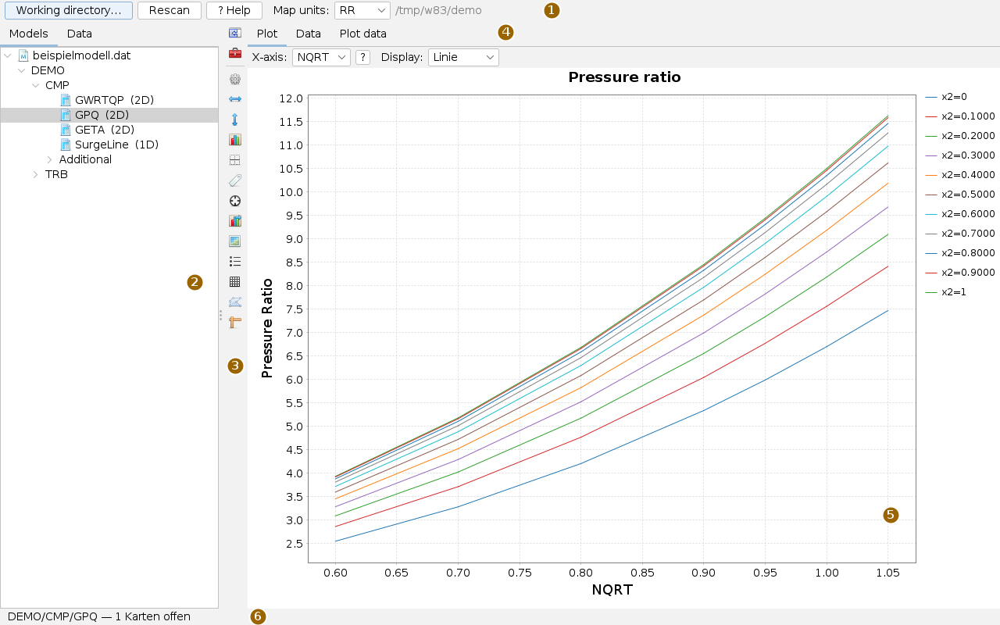
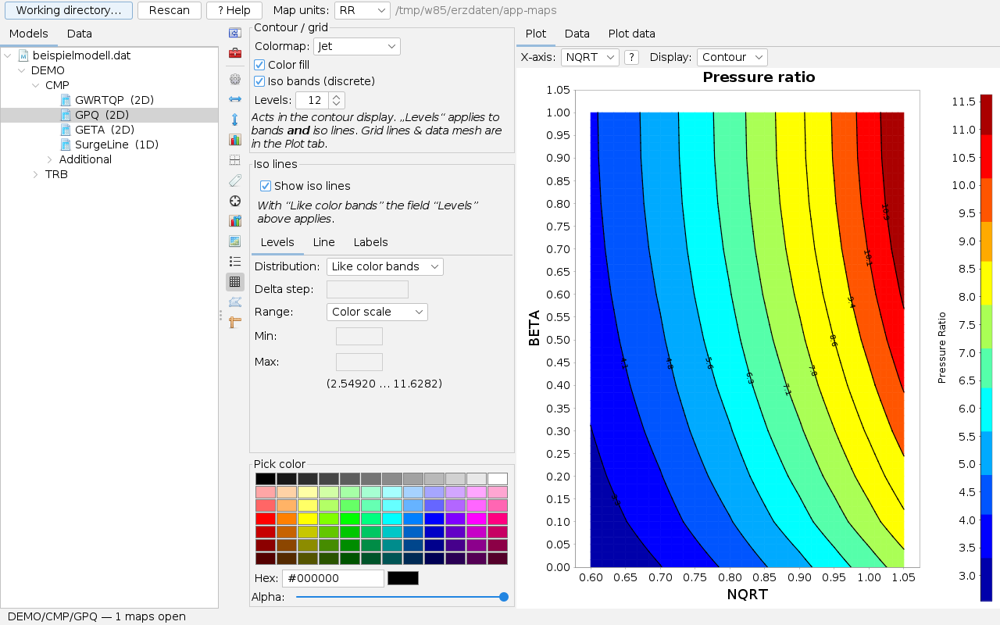
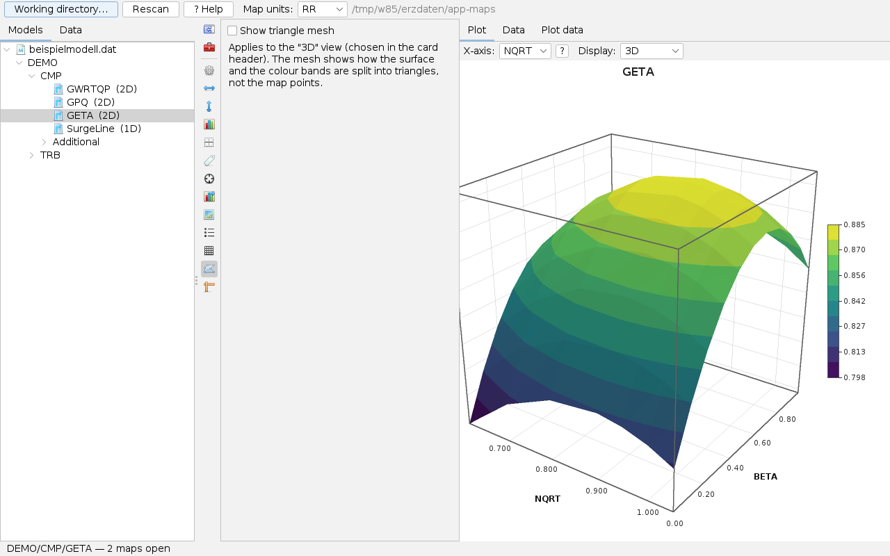
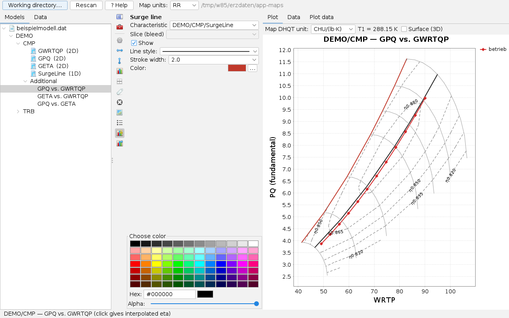
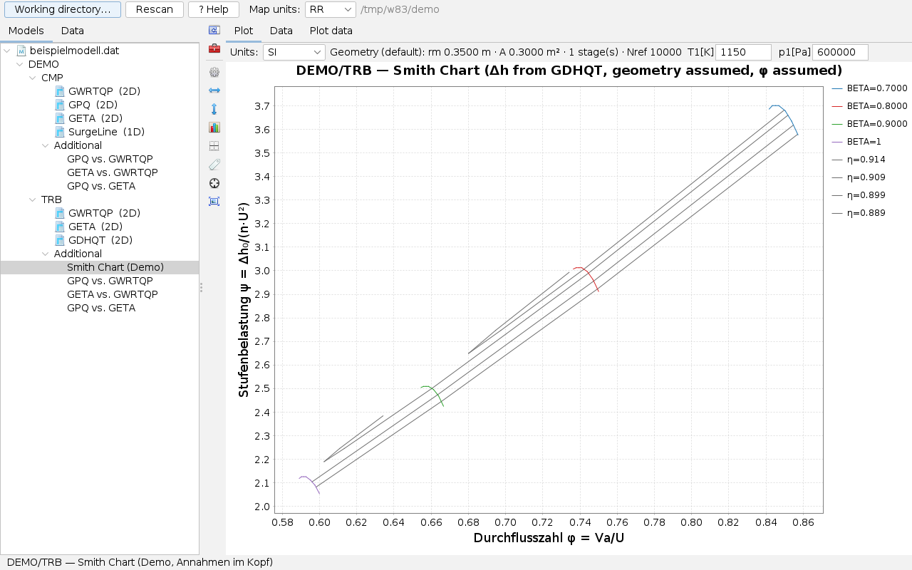
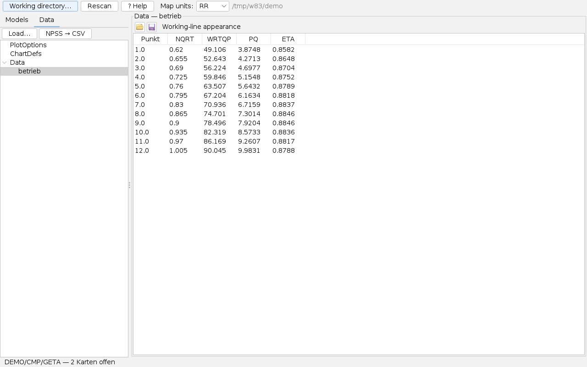
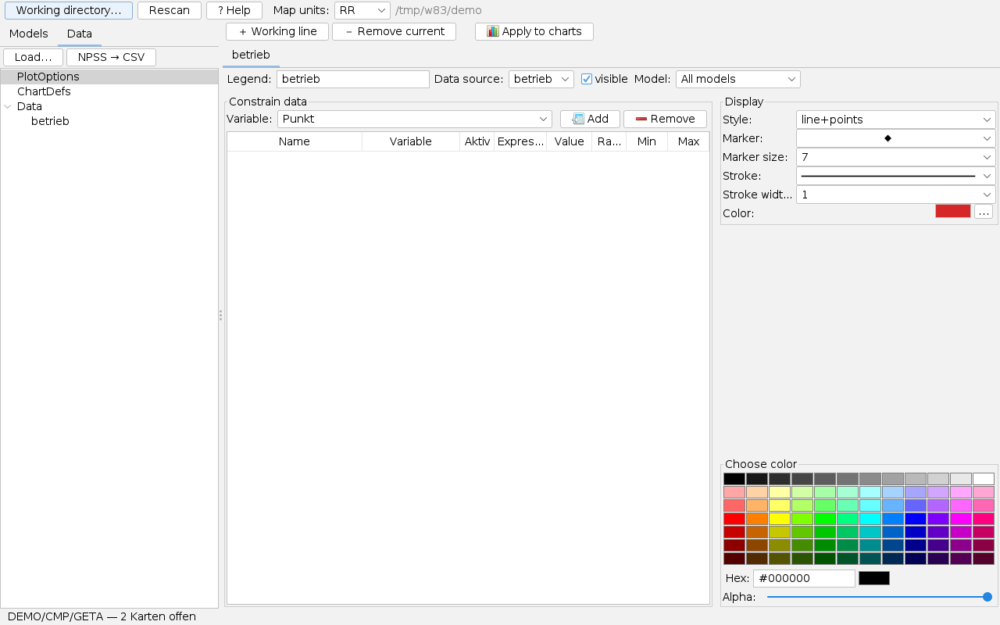
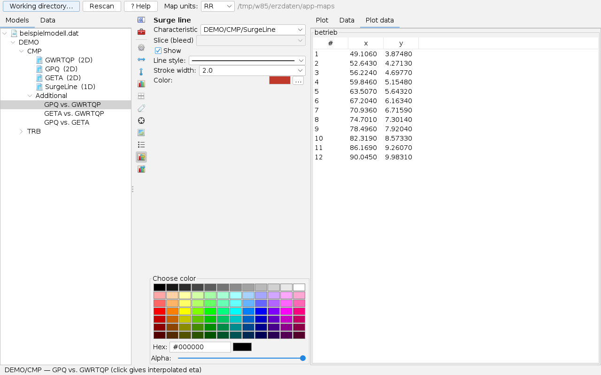
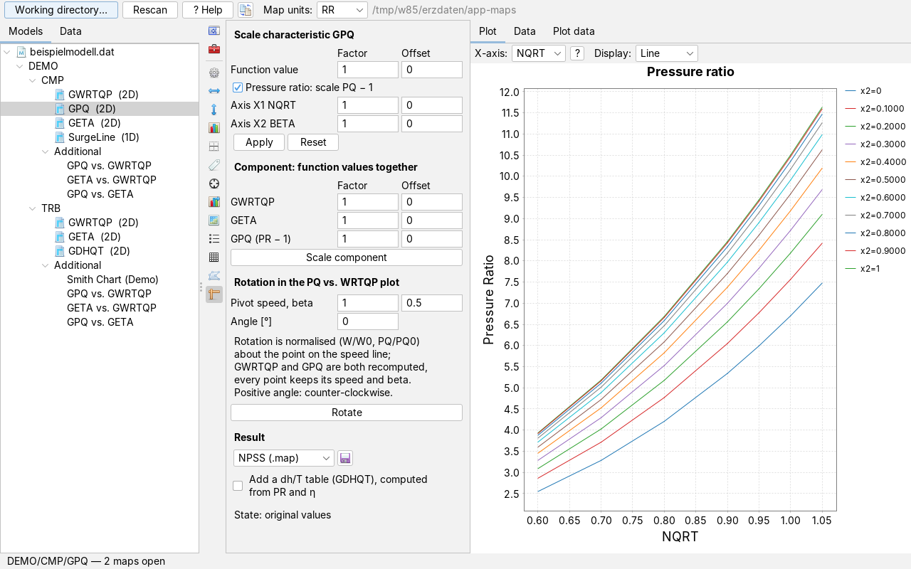

Using Component Maps
User page, as of 7 October 2026. How to read a model directory, view characteristics as a line family, contour or surface, build derived maps with surge line and efficiency islands, overlay working lines from measured data, read the Smith chart of a turbine, scale maps and convert between formats. The pictures are screenshots of the app with an invented example model (one compressor, one turbine) and an invented working line.
Some pictures were taken before the English interface was complete and may still show German labels.
The window
Open the app from the Apps menu with Open Component Maps… or with Alt+K; a .dat or .map file opens it directly.

Every tree entry you click opens a card on the right; opened cards stay in the background and reappear at once on the next click, the status line counts them. Between tree and card sits the vertical bar: its two top buttons fold the tree and the option area in and out, the others open an option page for the visible card. Which pages exist depends on the kind of card (see The bar). The dividers can be moved.
A map in five steps
- Press Working directory… and choose the folder with the map files. The app reads it and shows files, components and characteristics as a tree.
- Click a characteristic, for example
GPQ (2D). It appears on the right as a line family; the header row switches to Contour or 3D. - Under Additional choose the derived picture GPQ vs. GWRTQP: pressure ratio over flow with efficiency islands. Switch on the speed lines on the Special lines page and the surge line on Surge line.
- In the Data tab on the left, read a CSV with operating points with Load…; the working line appears on every card that has an x and y assignment.
- A click into the chart reads the value at that spot.
Working directory and tree
Working directory… chooses the folder, Rescan reads it again, for example after a file was added. The path is shown to the right. The app reads:
| Format | Files | Note |
|---|---|---|
| MIdata | .dat | Characteristics with 0 to 4 dimensions, structured or unstructured. |
| NPSS | .map, .mdl, .run | Also whole models with #include chains; every table sits under its element. |
| GasTurb | map files in GasTurb format | The surge line of the file is recognised. |
| .chr | <size>_<component>.CHR | All .chr files of a folder count as one model. |
The app recognises the format by content, not just by extension. A file that cannot be read stands in the tree with its reason instead of an error. A click on the file node shows the text of the file, read-only and up to 2 MB – useful especially for a rejected file.
In the tree every characteristic is followed by its dimension, for example (2D). Under every component that carries flow and efficiency on the same grid, the app adds the folder Additional with the derived pictures; turbines also get the Smith Chart.
Map units: in the top bar chooses the unit profile of the map axes (for example RR, Imp or SI) for the file selected in the tree, or, with nothing selected, the default for all. Working lines in SI are converted to these units when drawn. The app remembers the choice in the working directory.
Viewing a characteristic
The card of a characteristic has three tabs: Plot with the chart, Data with the numbers of the characteristic and Plot data with the points of the working lines drawn on this card.
In the header row X-axis: chooses which grid axis is horizontal; the other becomes the family (in the picture x2 = BETA). The ? button next to it explains the switch. Display: chooses Line (line), Contour or 3D. For three-dimensional characteristics Slice: also chooses the plane of the third axis.
Axis labels take the names from the file; an alias given in the load panel appears as "Alias [unit]". If a file lacks the assignment of the first axis, the app labels it x1 instead of repeating the name of the other axis.
Contour

The Contour page of the bar sets the Colormap (Jet, Viridis, Turbo, greyscale, cool-warm), the Color fill, Iso bands (discrete) instead of a gradient and the number of Levels. Below are the iso-lines: on or off, their Distribution (like the colour bands or with their own Delta step), the Range (colour scale or own minimum and maximum), stroke and labels. The value range of the characteristic is given in brackets.
In band mode the app refines the grid bilinearly into smaller quads, and fill and lines are computed on the same refinement. So every line lies on a colour change, with no colour tongues in saddle cells. Grid lines and the data mesh are on the Plot page.
3D view

Display: 3D shows a two-dimensional characteristic as a surface: the value as height over the two grid axes, coloured in bands. Speed lines of different length leave gaps instead of invented values. For three-dimensional characteristics the view shows the volume with its hull up to the chosen plane and the cut surface there. The mouse rotates and zooms the picture. Show triangle mesh on the 3D view page shows how the surface is split up; these are not the map points themselves.
Readout
On the Readout page Show crosshair is the master switch: when on, a click into the chart gives the values of the spot in the status line and as an annotation in the picture. In the derived pictures it is the interpolated efficiency. When off, there is no readout, no cross and no annotation.
The bar
The buttons carry icons only; the tooltip names the page. A click opens the page in the option area, a second click closes it. The settings apply to the visible card and are saved.
| Page | Content | for |
|---|---|---|
| General | title, background, margins of the chart | all |
| X-axis, Y-axis | label, range, scale, ticks | all |
| Plot | grid lines, data mesh of the contour | all |
| Markers | point shape and size of the series | all |
| Legend | position and content of the legend | all |
| Readout | crosshair and annotation | all |
| Work line legend | separate legend of the working lines | characteristics |
| Special lines | Line A (beta lines), Line B (speed lines), η iso-lines: show, colour, stroke, labels | characteristics, derived pictures |
| Series | stroke, colour and conditions per series | characteristics, derived pictures |
| Contour | colormap, bands, iso-lines | characteristics |
| 3D view | triangle mesh | characteristics |
| Scaling | scale and rotate a characteristic or component | characteristics |
| Surge line | characteristic of the surge line, slice, stroke, colour | derived picture PQ over WRTP |
| Max line | line of highest efficiency with table | derived pictures |
| Geometry | radii, area, number of stages, reference speed | Smith chart |
Every page has the same width; what does not fit scrolls. The colour chooser at the bottom of many pages applies to the colour field clicked last.
Derived pictures

Under Additional there are three pictures per component: GPQ vs. GWRTQP (pressure ratio over flow, with efficiency islands), GETA vs. GWRTQP (efficiency over flow) and GPQ vs. GETA. The app finds the characteristics by their role: flow, efficiency and either the pressure ratio itself or Δh/T, from which it computes it. In that case the header row chooses the Map DHQT unit and names the reference temperature T1; Surface (3D) shows the picture in space.
- Special lines: in the picture PQ over WRTP only the islands are visible at first. On the Special lines page Line B switches on the speed lines, Line A the beta lines; η iso-lines sets number, range and labels of the islands.
- Surge line: Characteristic is automatic at first – GasTurb and NPSS files name their surge line themselves. For a
.datyou choose the characteristic of the component from the list, in the pictureDEMO/CMP/SurgeLine. A two-dimensional surge line (for example over a bleed) gets its plane under Slice (bleed). Turbines do not have this page. - Max line: Show draws the line of highest efficiency; the table below gives efficiency, pressure ratio and flow there for every speed.
A click into the picture gives the interpolated efficiency of the spot.
Smith chart

The Smith Chart of a turbine plots the stage loading ψ = Δh₀/(n·U²) over the flow coefficient φ = Va/U, with lines of equal efficiency. The app takes the stage work from the best source available, in this order: Δh/T as a characteristic, as an axis, the pressure ratio as a characteristic, as an axis, and last an assumption. Title and status line name the source so that nobody mistakes an assumption for a result.
The header row holds the Units, the geometry, the inlet temperature T1[K] and the inlet pressure p1[Pa]. The geometry is entered on the Geometry page of the bar: mean radius and annulus area or hub and tip radius, whole number of stages and reference speed; an invalid entry is rejected in red, not rounded. If the units of flow and speed are known, the app computes φ from the mass flow via Mach number and blade speed; points beyond choke are counted and reported.
Working lines and measured points
Measurement series or calculation runs are laid over the maps. Everything for this is in the Data tab on the left.

betrieb as a table.- Load… chooses a CSV, TSV or text file or an already prepared H2 file (
.mv.db). A CSV opens the load panel in the content area: preview, separator, swap rows and columns, types and units, Convert to SI base; then Take into work lines. The app stores the data as an H2 file next to the source and later reads only the columns it needs. If a column has a non-SI unit and is not converted, it warns before taking. - The data set appears under Data; a click shows it as a table. Above the table two buttons load and save the working-line appearance (colours, markers, strokes) as a separate file.
- ChartDefs defines which column or expression is x and y on which card. The table is filled with built-in defaults and editable; ＋ Chart assignment adds a row. Allowed are column names, expressions such as
A/B, map functions such asPQofDHQT(…)and surrogate models from app-neural viaSUR(latest, …). For NPSS cards the card coordinates apply. - PlotOptions manages the working lines themselves (picture below).

＋ Working line creates a new line, － Remove current deletes the selected one, Apply to charts redraws all cards. Per line: Legend, Data source, visible and Model – a line can be restricted to one model of the working directory so that it does not appear on a card whose file does not belong to it. Under Constrain data (restrict data) you add conditions on variables (expression with value, or range with min and max); several conditions apply together, so one measurement series yields several lines, for example per speed or per test. On the right you choose Style (line, points or both), marker, stroke and colour.
The two symbol buttons at the top right save and load the working lines themselves – all tabs with legend, data source, model, conditions and appearance – as an XML file (suggested name arbeitslinien.xml in the working directory). Loading replaces the current working lines. The file does not contain the data, only the name of the data source; if that source is not loaded yet, the status line says so, and the line appears as soon as the data are loaded. This file is different from the ChartDefs and from the working-line appearance above the table; a ChartDefs file is rejected here.

The working lines appear on every card for which ChartDefs has an assignment, also in the contour view. Large H2 data are read only when a column is needed, and queried in the background. NPSS → CSV reads the output of an NPSS run (.out, .viewOut) with its .view and writes a CSV, which you then load as usual. Runs can be handed over from app-prelimdesign with a button there.
If the points are obviously wrong – a pressure ratio near 1, a line far outside – a unit is usually to blame. First check whether Convert to SI base was on when loading and which profile applies under Map units.
Scaling maps

The Scaling page changes the loaded values, not just the picture:
- Characteristic: Factor and Offset for the function value and each axis, Apply, Reset. For the pressure ratio, scale PQ − 1 scales the distance from 1, so PQ = 1 stays fixed.
- Component: flow, efficiency and pressure ratio (or Δh/T) together. If Δh/T, efficiency and pressure ratio are all present, they stay consistent: if the pressure ratio is scaled, the app recomputes Δh/T; if Δh/T or efficiency are scaled, the pressure ratio follows.
- Rotation in the PQ vs. WRTQP plot about a point of the speed line (Pivot speed, beta) by an Angle; rotation is done normalised, every point keeps its speed and beta.
- Result: the selection box sets the format, the disk symbol (Save) writes the state next to the source —
.datas<name>_skaliert.dat, NPSS as<name>_skaliert_NPSS.map, GasTurb as<name>_skaliert_GasTurb.MAP; with several components one file per component with_<component>in the name. The other formats come first, the source format last. The source itself is never overwritten. The State line says whether and how many characteristics are changed; until the next reading the changed state applies in all pictures. - Additional tables (compressors only): if a component has Δh/T and efficiency but no pressure ratio, the box Add a PR table (GPQ) appears; if it has pressure ratio and efficiency but no Δh/T, the box Add a dh/T table (GDHQT). Each point is computed as in the derived chart (dry air, T1 = 288.15 K, Δh/T in the unit of the derived chart). GasTurb requires a pressure ratio; if it is missing, it is always computed there. GasTurb has no Δh/T table, so it is left out there. If a point cannot be computed (for example efficiency 0), nothing is written and the status line names the point.
Converting between formats
When a characteristic from a GasTurb file is selected, buttons for converting appear in the top bar: Save as NPSS writes <name>_NPSS.map, Save as .dat writes <name>_DAT.dat, each next to the source. When a .dat file with two-dimensional maps is selected, Save as NPSS writes one file per component (<name>_NPSS.map, with several components <name>_<component>_NPSS.map): GWRTQP, GETA and GPQ become TB_Wc, TB_eff and TB_PR, other maps go along as TB_<name>, a curve with SURGE or PUMP in its name becomes TB_SurgeLine. What NPSS tables cannot hold (one-dimensional curves, unstructured maps) is listed as a comment in the file and in the status line tooltip. For NPSS cards there is the way back to GasTurb; a map with more beta values than the target format can hold is rejected rather than falsified. The same conversions exist as command-line tools in the package cmd.maps, with the same program code; -sprache:en switches their output to English.
What is saved
- The settings of every card (axes, special lines, surge line, contour, series) and the choice under Map units are kept in
.maps-ui.propertiesin the working directory. - Loaded working data lie as an H2 file next to the source; the working-line appearance and the ChartDefs can be saved and loaded as separate files.
- The working lines themselves (PlotOptions) apply to the session; the buttons in PlotOptions save them as an XML file and load them again.
- Scaled maps are kept only by Save on the Scaling page.
Keyboard and mouse
Alt+K opens the app. In the chart the mouse wheel zooms; dragging with the mouse zooms to a region, undoing the zoom restores typed-in axis limits. A click reads out when the crosshair is on. In the 3D view dragging and the mouse wheel rotate and zoom. In the tree the arrow keys select the next entry.
Limits
- The Smith chart computes air with a fixed isentropic exponent and only subsonic; beyond choke there is no value.
- The turbine from .chr gets its pressure ratio from dry air and a reference temperature (default 1500 K).
- Unstructured .dat characteristics and complete NPSS models are tested less widely against foreign files than the structured cases.
- The working lines (PlotOptions) outlast the session only if you save them; they are not loaded automatically on restart.
What the app can do and what it builds on is described in the overview.